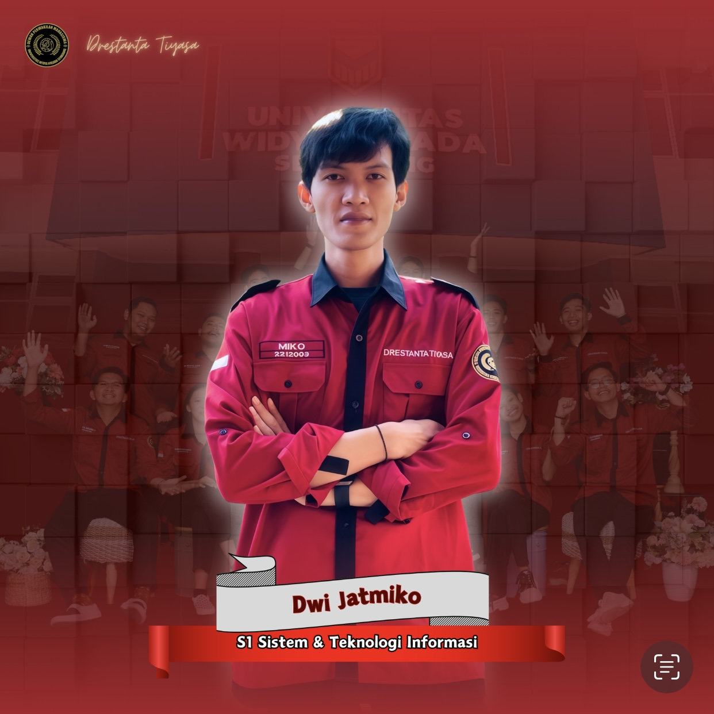

Mahasiswa S1 Sistem & Teknologi Informasi | Anggota Komisi 2 DPM | Juara 2 Lomba Web Design
Grobogan, Jawa Tengah, Indonesia

Platform digital resmi DPM Universitas Widya Husada Semarang yang saya bangun untuk memfasilitasi transparansi informasi organisasi, komunikasi antar mahasiswa, dan dokumentasi kegiatan. Website ini menjadi bukti kontribusi nyata saya dalam DPM sekaligus aplikasi dari kemenangan Juara 2 Lomba Web Design.
Dewan Perwakilan Mahasiswa
Universitas Widya Husada Semarang
Atas kontribusi sebagai Anggota Komisi 2 DPM periode 2023/2024
2023/2024Kompetisi Web Design
Penghargaan atas kemampuan desain dan pengembangan website terbaik
PrestasiProject Implementation
Pengembangan website resmi organisasi kemahasiswaan
Project